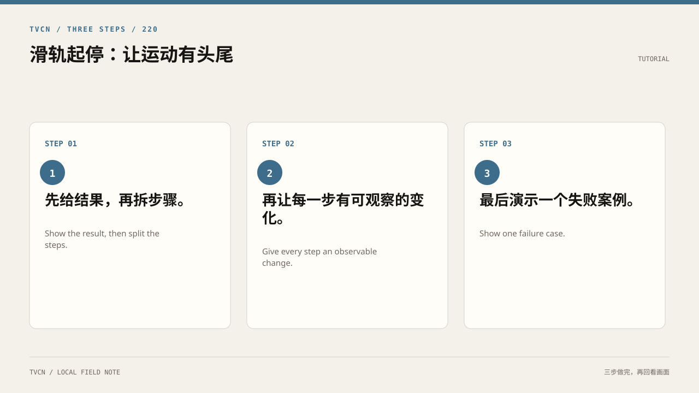

滑轨是“关系镜头”，不是炫技
用滑轨时先问：移动要让观众多看到什么关系？前景遮挡到露出人物、从一个人的背到另一个人的脸、从空椅到门口。没有关系变化，移动就是多余。
行程控制在 20–40 厘米，速度慢到能看清背景变化；起幅和落幅都要能单独构图。
边界
滑轨不适合快速动作和狭窄空间。地面不平、脚下有电线，都会让画面抖；先清场，再铺轨。
滑轨起停：头尾各留 3 帧缓动
滑轨看起来“假”，多数是起停太硬。手动推拉时，头尾各留 3 帧加速/减速；电动滑轨把起停设为 10–20% 行程。
- 先空推一遍，标出起点和终点；不要开机才找位置。
- 速度与镜头时长匹配：3 秒走完 1 米，约 0.33m/s；太快会糊，太慢会闷。
- 地面不平时，用两块板找平；滑轨不水平，画面会斜。
验收：回放看起停是否“顿”；顿就加缓动，不要靠后期变形稳定。
DIAGRAM / Tutorial
三步流程

现场
起幅停 1 秒、匀速 3 秒、落幅停 1 秒；用监视器看起停，不要用手腕硬掰。
怎么做
- 起幅停 1 秒。
- 匀速走 3 秒。
- 落幅停 1 秒，用监视器看起停，不要用手腕硬掰。
别踩
别一开机就推；没有起幅停顿，剪辑时找不到入点。
图片说明：本页封面、图解与步骤图是编辑示意或结构图，不是本页实测照片，也不能当作器材测试证据；AI 辅助生成的图会在图注标出。判断器材或画面，以正文的测试条件与现场记录为准。